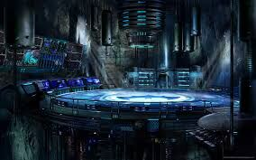
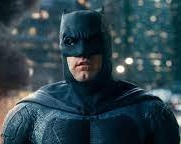
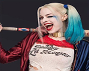
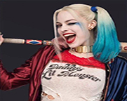

Batman
Bruce Wayne é o único personagem a se identificar como Batman e
aparece em Batman, Detective Comics, Batman e Robin e Batman: O
Cavaleiro das Trevas.
Dick Grayson retorna ao manto de Asa
Noturna.
 

Arlequina
A criação de Arlequina foi uma ideia de última hora proposta pelo escrito americano Paul Dini para modificar uma cena do vigésimo segundo episódio de Batman: The Animated Series.